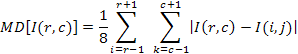

<!DOCTYPE HTML PUBLIC "-//W3C//DTD HTML 4.01 Transitional//EN">
<!-- saved from url=(0014)about:internet -->
<html xmlns:v="urn:schemas-microsoft-com:vml"
xmlns:o="urn:schemas-microsoft-com:office:office"
xmlns:w="urn:schemas-microsoft-com:office:word"
xmlns:st1="urn:schemas-microsoft-com:office:smarttags"
xmlns="http://www.w3.org/TR/REC-html40">

<head>
<meta http-equiv=Content-Type content="text/html; charset=UTF-8">
<meta name=ProgId content=Word.Document>
<meta name=Generator content="Microsoft Word 11">
<meta name=Originator content="Microsoft Word 11">
<link rel=File-List href="moravec_filter_files/filelist.xml">
<link rel=Edit-Time-Data href="moravec_filter_files/editdata.mso">
<!--[if !mso]>
<style>
v\:* {behavior:url(#default#VML);}
o\:* {behavior:url(#default#VML);}
w\:* {behavior:url(#default#VML);}
.shape {behavior:url(#default#VML);}
</style>
<![endif]-->
<title>moravec_filter</title>
<o:SmartTagType namespaceuri="urn:schemas-microsoft-com:office:smarttags"
 name="stockticker"/>
<!--[if gte mso 9]><xml>
 <o:DocumentProperties>
  <o:Author>Mounika</o:Author>
  <o:Template>Normal</o:Template>
  <o:LastAuthor>jhansi</o:LastAuthor>
  <o:Revision>56</o:Revision>
  <o:TotalTime>26</o:TotalTime>
  <o:Created>2004-06-04T21:33:00Z</o:Created>
  <o:LastSaved>2010-01-06T21:57:00Z</o:LastSaved>
  <o:Pages>1</o:Pages>
  <o:Words>294</o:Words>
  <o:Characters>1682</o:Characters>
  <o:Company>SIUE</o:Company>
  <o:Lines>14</o:Lines>
  <o:Paragraphs>3</o:Paragraphs>
  <o:CharactersWithSpaces>1973</o:CharactersWithSpaces>
  <o:Version>11.9999</o:Version>
 </o:DocumentProperties>
</xml><![endif]--><!--[if gte mso 9]><xml>
 <w:WordDocument>
  <w:SpellingState>Clean</w:SpellingState>
  <w:GrammarState>Clean</w:GrammarState>
  <w:ValidateAgainstSchemas/>
  <w:SaveIfXMLInvalid>false</w:SaveIfXMLInvalid>
  <w:IgnoreMixedContent>false</w:IgnoreMixedContent>
  <w:AlwaysShowPlaceholderText>false</w:AlwaysShowPlaceholderText>
  <w:Compatibility>
   <w:BreakWrappedTables/>
   <w:SnapToGridInCell/>
   <w:WrapTextWithPunct/>
   <w:UseAsianBreakRules/>
  </w:Compatibility>
  <w:BrowserLevel>MicrosoftInternetExplorer4</w:BrowserLevel>
 </w:WordDocument>
</xml><![endif]--><!--[if gte mso 9]><xml>
 <w:LatentStyles DefLockedState="false" LatentStyleCount="156">
 </w:LatentStyles>
</xml><![endif]--><!--[if !mso]><object
 classid="clsid:38481807-CA0E-42D2-BF39-B33AF135CC4D" id=ieooui></object>
<style>
st1\:*{behavior:url(#ieooui) }
</style>
<![endif]-->
<style>
<!--
 /* Style Definitions */
 p.MsoNormal, li.MsoNormal, div.MsoNormal
	{mso-style-parent:"";
	margin:0in;
	margin-bottom:.0001pt;
	mso-pagination:widow-orphan;
	font-size:12.0pt;
	font-family:"Times New Roman";
	mso-fareast-font-family:"Times New Roman";}
h2
	{mso-margin-top-alt:auto;
	margin-right:0in;
	mso-margin-bottom-alt:auto;
	margin-left:0in;
	mso-pagination:widow-orphan;
	mso-outline-level:2;
	font-size:18.0pt;
	font-family:"Times New Roman";}
pre
	{margin:0in;
	margin-bottom:.0001pt;
	mso-pagination:widow-orphan;
	font-size:10.0pt;
	font-family:"Courier New";
	mso-fareast-font-family:"Times New Roman";}
span.SpellE
	{mso-style-name:"";
	mso-spl-e:yes;}
span.GramE
	{mso-style-name:"";
	mso-gram-e:yes;}
@page Section1
	{size:8.5in 11.0in;
	margin:1.0in 1.25in 1.0in 1.25in;
	mso-header-margin:.5in;
	mso-footer-margin:.5in;
	mso-paper-source:0;}
div.Section1
	{page:Section1;}
-->
</style>
<!--[if gte mso 10]>
<style>
 /* Style Definitions */
 table.MsoNormalTable
	{mso-style-name:"Table Normal";
	mso-tstyle-rowband-size:0;
	mso-tstyle-colband-size:0;
	mso-style-noshow:yes;
	mso-style-parent:"";
	mso-padding-alt:0in 5.4pt 0in 5.4pt;
	mso-para-margin:0in;
	mso-para-margin-bottom:.0001pt;
	mso-pagination:widow-orphan;
	font-size:10.0pt;
	font-family:"Times New Roman";
	mso-ansi-language:#0400;
	mso-fareast-language:#0400;
	mso-bidi-language:#0400;}
</style>
<![endif]--><!--[if gte mso 9]><xml>
 <o:shapedefaults v:ext="edit" spidmax="13314"/>
</xml><![endif]--><!--[if gte mso 9]><xml>
 <o:shapelayout v:ext="edit">
  <o:idmap v:ext="edit" data="1"/>
 </o:shapelayout></xml><![endif]-->
</head>

<body lang=EN-US style='tab-interval:.5in'><script language="JavaScript" type="text/JavaScript">
function syn(){
if(parent.nav.tree){
 if(parent.nav.tree.loaded){
  parent.nav.tree.selectNode(217);
 }else{
  setTimeout("syn()",500);
}
  }else{
  setTimeout("syn()",500);
  }}
if(parent!=self){
  setTimeout("syn()",100);
}else{
  parent.location.href = "../../index.htm#page=CVIP_C_functions%2Fmoravec_filter.html";
}
originalOnload = window.onload;
if(originalOnload==null){
window.onload = function(){parent.contentLoaded = true;};
}else{
window.onload = function(){originalOnload();parent.contentLoaded = true;};
}
</script> 


<div class=Section1>

<h2>NAME</h2>

<pre><span style='mso-spacerun:yes'>     </span><span class=SpellE>moravec_filter</span> - a spatial- an edge detecting filter</pre><pre><o:p>&nbsp;</o:p></pre>

<h2>SYNOPSIS</h2>

<pre><span style='mso-spacerun:yes'>      </span>#include &lt;CVIPtoolkit.h&gt;</pre><pre><span style='mso-spacerun:yes'>      </span>#include &lt;CVIPconvert.h&gt;</pre><pre><span style='mso-spacerun:yes'>      </span>#include &lt;CVIPdef.h&gt;</pre><pre><span style='mso-spacerun:yes'>      </span>#include &lt;CVIPimage.h&gt;</pre><pre><span style='mso-spacerun:yes'>      </span>#include &lt;CVIPspfltr.h&gt;</pre><pre><o:p>&nbsp;</o:p></pre><pre><span style='mso-spacerun:yes'>     </span>Image<span style='mso-spacerun:yes'>    </span>*<span
class=SpellE>moravec_<span class=GramE>filter</span></span><span class=GramE>(</span>Image<span style='mso-spacerun:yes'>    </span>*<span
class=SpellE>inputIMAGE</span>, float <span class=SpellE>threshval</span>)</pre><pre><o:p>&nbsp;</o:p></pre><pre><span style='mso-spacerun:yes'>      </span>&lt;<span
class=GramE>inputImage</span>&gt; - pointer to an Image</pre><pre><span style='mso-spacerun:yes'>      </span>&lt;<span
class=SpellE><span class=GramE>threshval</span></span>&gt; - threshold value</pre>

<h2><st1:stockticker w:st="on">PATH</st1:stockticker></h2>

<pre><span style='mso-spacerun:yes'>     </span>$<span class=SpellE>CVIPtoolsHOME\CVIPC\SPATIALFILTER\moravec_filter.c</span></pre>

<h2>DESCRIPTION</h2>

<pre><span style='mso-spacerun:yes'>     </span>The <span class=SpellE>Moravec</span> Detector is the simplest corner detector. This is used </pre><pre><span style='mso-spacerun:yes'>     </span>to find the points of maximum contrast, which corresponds to potential</pre><pre><span style='mso-spacerun:yes'>     </span>corners and sharp edges. This is defined as</pre><pre><!--[if gte vml 1]><o:wrapblock><v:shapetype
  id="_x0000_t75" coordsize="21600,21600" o:spt="75" o:preferrelative="t"
  path="m@4@5l@4@11@9@11@9@5xe" filled="f" stroked="f">
  <v:stroke joinstyle="miter"/>
  <v:formulas>
   <v:f eqn="if lineDrawn pixelLineWidth 0"/>
   <v:f eqn="sum @0 1 0"/>
   <v:f eqn="sum 0 0 @1"/>
   <v:f eqn="prod @2 1 2"/>
   <v:f eqn="prod @3 21600 pixelWidth"/>
   <v:f eqn="prod @3 21600 pixelHeight"/>
   <v:f eqn="sum @0 0 1"/>
   <v:f eqn="prod @6 1 2"/>
   <v:f eqn="prod @7 21600 pixelWidth"/>
   <v:f eqn="sum @8 21600 0"/>
   <v:f eqn="prod @7 21600 pixelHeight"/>
   <v:f eqn="sum @10 21600 0"/>
  </v:formulas>
  <v:path o:extrusionok="f" gradientshapeok="t" o:connecttype="rect"/>
  <o:lock v:ext="edit" aspectratio="t"/>
 </v:shapetype><v:shape id="_x0000_s1027" type="#_x0000_t75" style='position:absolute;
  margin-left:75.75pt;margin-top:0;width:223.5pt;height:40.5pt;z-index:1;
  mso-position-vertical:top'>
  <v:imagedata src="moravec_filter_files/image003.gif" o:title="image001"/>
  <w:wrap type="topAndBottom"/>
 </v:shape><![endif]--><![if !vml]><span style='mso-ignore:vglayout'>
 <table cellpadding=0 cellspacing=0 align=left>
  <tr>
   <td width=101 height=0></td>
  </tr>
  <tr>
   <td></td>
   <td></td>
  </tr>
 </table>
 </span><![endif]><!--[if gte vml 1]></o:wrapblock><![endif]--><br
style='mso-ignore:vglayout' clear=ALL>
</pre><pre><span style='mso-tab-count:3'>                       </span></pre><pre><span style='mso-spacerun:yes'>     </span>It finds the average difference between a pixel and its neighbors in all </pre><pre><span style='mso-spacerun:yes'>     </span><span
class=SpellE>directions.Then</span> the threshold operation is applied on the image.</pre><pre><o:p>&nbsp;</o:p></pre><pre><span style='mso-spacerun:yes'>     </span></pre><pre><o:p>&nbsp;</o:p></pre>

<h2>TYPES AND C<st1:stockticker w:st="on">ONST</st1:stockticker>ANTS</h2>

<pre><span style='mso-spacerun:yes'>     </span>None</pre><pre><o:p>&nbsp;</o:p></pre>

<h2>RETURN VALUES</h2>

<pre><span style='mso-spacerun:yes'>     </span>Pointer to the processed image</pre><pre><o:p>&nbsp;</o:p></pre>

<h2>HISTORY</h2>

<pre><span style='mso-spacerun:yes'>     </span>History information recorded: None</pre><pre><o:p>&nbsp;</o:p></pre>

<h2>EXAMPLE</h2>

<pre><span style='mso-spacerun:yes'>      </span>#include &lt;CVIPtoolkit.h&gt;</pre><pre><span style='mso-spacerun:yes'>      </span>#include &lt;CVIPconvert.h&gt;</pre><pre><span style='mso-spacerun:yes'>      </span>#include &lt;CVIPdef.h&gt;</pre><pre><span style='mso-spacerun:yes'>      </span>#include &lt;CVIPimage.h&gt;</pre><pre><span style='mso-spacerun:yes'>      </span>#include &lt;CVIPspfltr.h&gt;</pre><pre><o:p>&nbsp;</o:p></pre><pre><span style='mso-spacerun:yes'>      </span>void main() {</pre><pre><span style='mso-spacerun:yes'>      </span>Image *cvipImage;</pre><pre><span style='mso-spacerun:yes'>      </span>IMAGE_FORMAT format;</pre><pre><span style='mso-spacerun:yes'>      </span>char *inputfile,*outputfile;</pre><pre><o:p>&nbsp;</o:p></pre><pre><span style='mso-spacerun:yes'>      </span>(void) setDisplay_Image(VIEWER, &quot;Default&quot;);</pre><pre><span style='mso-spacerun:yes'>      </span>print_CVIP(&quot;\n\t\<span
class=SpellE>tEnter</span> the<span style='mso-spacerun:yes'>  </span>Input File Name:<span style='mso-spacerun:yes'>  </span>&quot;);</pre><pre><span style='mso-spacerun:yes'>      </span>inputfile =(char *) getString_CVIP();</pre><pre><span style='mso-spacerun:yes'>      </span>format = getFormat_CVIP(inputfile);</pre><pre><span style='mso-spacerun:yes'>      </span>cvipImage = read_Image(inputfile,1);</pre><pre><span style='mso-spacerun:yes'>      </span>view_Image(cvipImage, inputfile);</pre><pre><span style='mso-spacerun:yes'>      </span>free(inputfile);</pre><pre><span style='mso-spacerun:yes'>      </span>/* the following call performs filter operation of threshold value of 100*/</pre><pre><span style='mso-spacerun:yes'>      </span>cvipImage = <span
class=SpellE>moravec_filter</span>(cvipImage,100);</pre><pre><span style='mso-spacerun:yes'>      </span>print_CVIP(&quot;\n\t\<span
class=SpellE>tEnter</span> the Output File Name:<span style='mso-spacerun:yes'>  </span>&quot;);</pre><pre><span style='mso-spacerun:yes'>      </span>outputfile = getString_CVIP();</pre><pre><span style='mso-spacerun:yes'>      </span>view_Image(cvipImage,outputfile);</pre><pre><span style='mso-spacerun:yes'>      </span>write_Image(cvipImage,outputfile,CVIP_NO,CVIP_NO,format,1);</pre><pre><span style='mso-spacerun:yes'>      </span>free(outputfile);</pre><pre><span style='mso-spacerun:yes'>      </span>}</pre><pre><o:p>&nbsp;</o:p></pre>

<h2>SEE ALSO</h2>

<pre><span style='mso-spacerun:yes'>     </span>SPATIALFILTER library</pre><pre><o:p>&nbsp;</o:p></pre>

<h2>AUTHOR</h2>

<pre><span style='mso-spacerun:yes'>     </span>Copyright (C) 2010 SIUE - by Scott <span
class=SpellE>Umbaugh</span> and <span class=SpellE>Mounika</span> <span
class=SpellE>Mamidi</span>.</pre><pre><o:p>&nbsp;</o:p></pre>

<p class=MsoNormal><o:p>&nbsp;</o:p></p>

</div>

</body>

</html>
